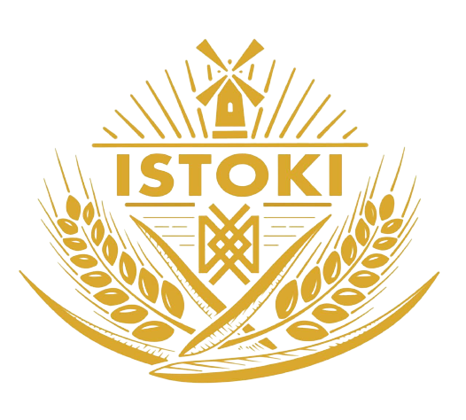

ISTOKI

Наша мука - возврат к истокам. Сохраняем лучшее, что есть в зерне

Мука цельносмолотая рисовая изготавливается путем разового помола цельного зерна на жерновах. В результате получается продукт, богатый клетчаткой. Используется для выпечки блинов, печенья, хлебцев и азиатских сладостей, также ее используют для панировки овощей, рыбы и мяса, для приготовления домашней лапши, теста для пельменей. Рисовая мука делает выпечку более полезной и из-за отсутствия клейковины имеет рассыпчатую структуру. Изделия получаются аппетитно хрустящие, с шикарной корочкой.

Отруби цельносмолотые пшеничные получают из зародышевой оболочки пшеничных зерен. Содержат витамины, микроэлементы, укрепляющие иммунитет и улучшающие обмен веществ, восполняют дефицит клетчатки в организме, нормализуют микрофлору кишечника. В них содержится большое количество пищевых волокон и ненасыщенных жирных кислот, а также незначительное количество калорий, в отличие от цельного зерна. Отруби пшеничные можно добавлять в каши, йогурты, салаты, печенье, хлеб и использовать в косметических целях.

Мука цельносмолотая гречневая необжаренная изготавливается путем разового помола цельного зерна на жерновах, без просеивания. Для помола используется зеленое зерно гречихи. В результате получается продукт, богатый клетчаткой, в котором сохраняются все полезные свойства зерна от зародыша до оболочки. Цельносмолотая гречневая мука богата аминокислотами, витаминами группы B, E и железом. Применяется в качестве ингредиента при выпечке хлебобулочных, кондитерских и кулинарных изделий, добавляется в смузи или супы, придавая им ни с чем несравнимый аромат и насыщенный вкус.


Секрет нашей муки в высококачественном сырье, бережной и щадящей его обработке. Попробовав изделие из нашей муки, вы не захотите возвращаться к продукции, которую пробовали раньше.
Благодаря тщательному подбору поставщиков сырья и любви к своему делу, нам удалось выйти на доступную стоимость конечного продукта.
Да, для всех наших постоянных клиентов мы подготовили гибкую систему скидок.